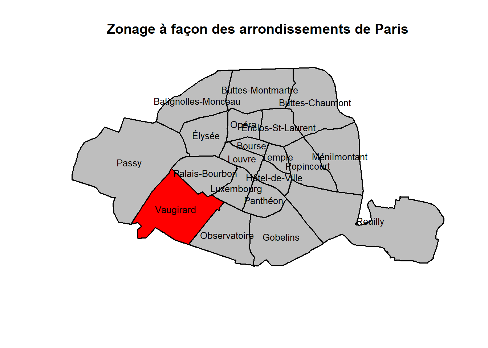
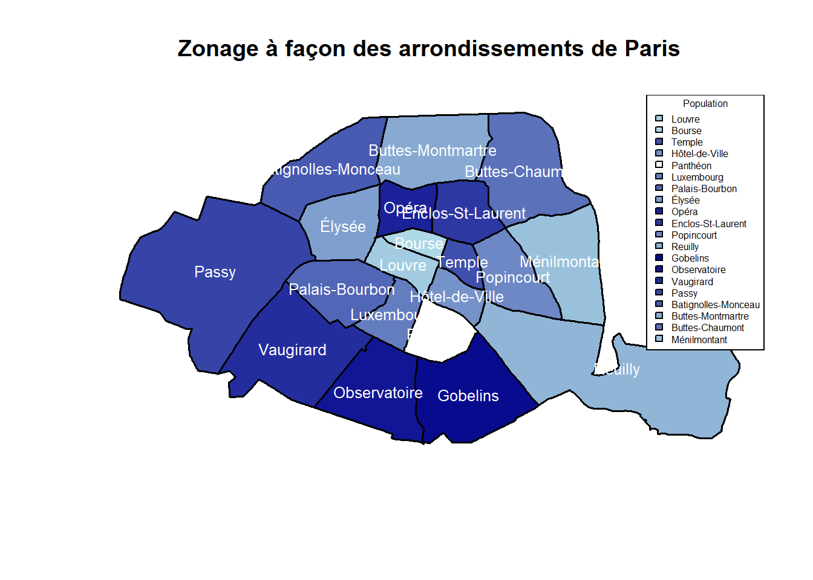
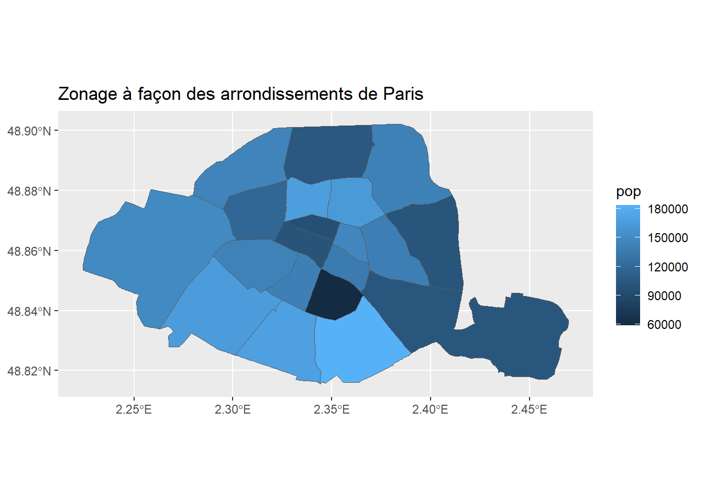

Nous allons vous présenter trois packages un peu différent pour obtenir des cartes : sf , mapview et oceanis. Il faut donc au préalable installer ces deux packages. install.packages(“sf”) install.packages(“mapview”) install.packages(“oceanis”) install.packages(“stringr”) # qui sera utiliser pour traiter les données.
library("sf")
Linking to GEOS 3.11.2, GDAL 3.6.2, PROJ 9.2.0; sf_use_s2() is TRUE
library("mapview")
The legacy packages maptools, rgdal, and rgeos, underpinning this package
will retire shortly. Please refer to R-spatial evolution reports on
https://r-spatial.org/r/2023/05/15/evolution4.html for details.
This package is now running under evolution status 0
library("oceanis")
Le chargement a nécessité le package : shiny
Le chargement a nécessité le package : shinyBS
library("stringr")
Dans un premier temps nous allons travailler avc mapview. Mapview est une bibliothèque R qui permet d’afficher des données géospatiales interactives et de les explorer facilement. Elle offre une interface graphique conviviale qui permet de zoomer, de déplacer et de sélectionner des données géospatiales à l’aide de la souris.
Nous décidons de travailler sur Paris tout au long de ce tuto.
On télécharge les données des arrondissements de Paris à partir du site opendata.paris.fr et stocke les données dans l’objet arrondissements sous forme d’un objet de type sf.
# Télécharger les données des arrondissements de Parisarrondissements <-st_read(dsn ="https://opendata.paris.fr/explore/dataset/arrondissements/download/?format=geojson&timezone=Europe/Berlin&lang=fr")
On convertit l’objet en un dataframe pour pouvoir travailler dessus.
# Convertir l'objet sf en un data.framearrondissements_df <-st_drop_geometry(arrondissements)
On supprime les colonnes qui ne sont pas nécessaires pour la représentation spatiale.
# Supprimer les colonnes qui ne sont pas nécessaires pour la représentation spatialecols_to_remove <-c("datasetid", "recordid", "fields", "geometry_name", "type")arrondissements_df <- arrondissements_df[, !(names(arrondissements_df) %in% cols_to_remove)]
On convertit les colonnes de type list en caractère et la liste en dataframe/
# Convertir les colonnes de type list en caractèrearrondissements_df <-lapply(arrondissements_df, function(x) if (is.list(x)) as.character(x) else x)# Convertir la liste en data.framearrondissements_df <-as.data.frame(arrondissements_df)
On crée un exemple de données df composé de deux colonnes : ‘id’ et ‘coordinates’, où ‘coordinates’ contient les coordonnées de chaque arrondissement.
Mes données sont sous la forme d’un vecteur c(a,b). Pour travailler plus simplement je travaille sur la colonne avec le vecteur en question pour créer deux colonnes latitude et longitude.
# Exemple de donnéesdf <-data.frame(id =c(1, 2), coordinates = arrondissements_df$geom_x_y)# Diviser la chaîne de caractères à la virgule et extraire la deuxième partiecoord_vec <-as.data.frame(strsplit(df$coordinates, ","))coord_vec[1,] <-gsub("c", "", coord_vec[1,]) # je supprime le ccoord_vec[1,] <-gsub('\\(', "", coord_vec[1,]) # je supprime la parenthèsecoord_vec[2,] <-gsub('\\)', "", coord_vec[2,])coord_vec[1,]<-as.numeric(coord_vec[1,])coord_vec[2,]<-as.numeric(coord_vec[2,])coord_vec_tranposee<-t(coord_vec)# Afficher le résultatarrondissements_df$lon<-coord_vec_tranposee[,1]arrondissements_df$lat<-coord_vec_tranposee[,2]
# Afficher les premières lignes du data.framearrondissements_sf <-st_as_sf(arrondissements_df, coords =c("lat","lon"), crs=4326)# Retour au format sf pour appliquer la fonction mapview()mapview(arrondissements_sf, zcol =c("c_ar","l_aroff"))
Nous allons travailler avec le package Oceanis. Le package oceanis permet de réaliser des cartes d’analyses.
library(oceanis)
Création d’un groupe : Création d’un vecteur d’identifiants de maille pour chaque arrondissement, un vecteur de code de groupe et un vecteur de noms officiels d’arrondissements.
# création d'un Groupe# Créer un vecteur d'identifiants de maille pour chaque arrondissementc_ar <-c("1", "2", "3", "4", "5", "6", "7", "8", "9", "10", "11", "12", "13", "14", "15", "16", "17", "18", "19", "20")# Créer un groupe code_groupe <-c(1, 2, 3, 4, 5, 6, 7, 8, 9, 10, 11, 12, 13, 14, 15, 16, 17, 18, 19, 20)# Créer un vecteur de noms officiels d'arrondissements avec les noms que vous avez fournisl_aroff <-c("Louvre", "Bourse", "Temple", "Hôtel-de-Ville", "Panthéon", "Luxembourg", "Palais-Bourbon", "Élysée", "Opéra", "Enclos-St-Laurent", "Popincourt", "Reuilly", "Gobelins", "Observatoire", "Vaugirard", "Passy", "Batignolles-Monceau", "Buttes-Montmartre", "Buttes-Chaumont", "Ménilmontant")# Créer un data.frame contenant les trois vecteursarrondissements_paris <-data.frame(c_ar, code_groupe, l_aroff)# Afficher le tableau de donnéesprint(arrondissements_paris)
Création d’un zonage à façon des arrondissements de Paris en utilisant la fonction zonage_a_facon() qui prend en entrée les données des arrondissements, le data.frame contenant les identifiants de maille et les codes de groupe, ainsi que les noms officiels d’arrondissements.
# Créer le zonage à façonze13 <-zonage_a_facon(arrondissements, arrondissements_paris, "c_ar", "code_groupe", "l_aroff")
Affichage de la carte avec les identifiants de maille colorés selon leur groupe. Ajout du nom de chaque arrondissement à son centre en créant un vecteur de noms d’arrondissements correspondant aux identifiants de chaque arrondissement. Affichage de la carte avec les noms d’arrondissements. Coloration d’un arrondissement spécifique (le 15e arrondissement) en rouge et les autres en gris, en sélectionnant le polygone correspondant à l’arrondissement 15 et en utilisant la fonction ifelse() pour colorier l’arrondissement 15 en rouge et les autres en gris. Affichage de la carte avec les noms d’arrondissements et l’arrondissement 15 coloré en rouge.
# Créer un vecteur de noms d'arrondissements correspondant aux identifiants de chaque arrondissementnom_arondissement <- arrondissements_paris$l_aroff[match(ze13$CODE_TERR, arrondissements_paris$code_groupe)]# Ajouter le nom de chaque arrondissement à son centreze13$nom_arondissement <- nom_arondissement# Afficher la carte avec les noms d'arrondissements# On va colorier l'arrondissment Vaugirard# Sélectionner le polygone correspondant à l'arrondissement 15arrondissement_15 <- ze13[ze13$CODE_TERR ==15, ]# Afficher la carte avec l'arrondissement 5 en rouge et les autres en grisplot(sf::st_geometry(ze13), col =ifelse(ze13$CODE_TERR ==15, "red", "grey"), border ="black", lwd =1.5)text(sf::st_coordinates(st_centroid(ze13)), labels = ze13$nom_arondissement, cex =0.8, col ="black")
Warning: st_centroid assumes attributes are constant over geometries
title("Zonage à façon des arrondissements de Paris")

On va maintenant essayer de coloriser les arrondissement en fonction de la population. Dans un premier temps on créer une variable population
# On construit le graphiqueplot(sf::st_geometry(ze13), col = mycolors[cut(ze13$pop, breaks = ze13$pop)], border ="black", lwd =1.5)text(sf::st_coordinates(st_centroid(ze13)), labels = ze13$nom_arondissement, cex =0.8, col ="white")
Warning: st_centroid assumes attributes are constant over geometries
# Ajouter une légendelegend("topright", title ="Population", legend = ze13$nom_arondissement, fill = mycolors[cut(ze13$pop, breaks = ze13$pop)], border ="black",box.lwd =1,cex=0.5) #réduire la taille de la légendetitle("Zonage à façon des arrondissements de Paris")

Pour les plus aguerries.es on peut utiliser ggplot
library(viridis)
Le chargement a nécessité le package : viridisLite
library(grDevices)library(ggplot2)# Convertir l'objet sf en un objet ggplot2ggplot_data <-ggplot() +geom_sf(data = ze13, aes(fill = pop, color =NULL)) +labs(title ="Zonage à façon des arrondissements de Paris") +scale_color_viridis(option ="D")# Afficher la carte avec les noms des arrondissementsggplot_data

Code source
---title: "Comment réaliser une carte sur R?"toc-title: ""categories: - Rauthor: "COTTET Coralie"affiliations: INEDdate: 06/06/2023css: "style.css"---Nous allons vous présenter trois packages un peu différent pour obtenir des cartes : __sf__ , __mapview__ et __oceanis__. Il faut donc au préalable installer ces deux packages. install.packages("sf")install.packages("mapview")install.packages("oceanis")install.packages("stringr") # qui sera utiliser pour traiter les données. ```{r results='hide'}library("sf")library("mapview")library("oceanis")library("stringr")```Dans un premier temps nous allons travailler avc __mapview__. __Mapview__ est une bibliothèque R qui permet d'afficher des données géospatiales interactives et de les explorer facilement. Elle offre une interface graphique conviviale qui permet de zoomer, de déplacer et de sélectionner des données géospatiales à l'aide de la souris. _Nous décidons de travailler sur Paris tout au long de ce tuto._1. On télécharge les données des arrondissements de Paris à partir du site opendata.paris.fr et stocke les données dans l'objet arrondissements sous forme d'un objet de type sf.```{r results = 'hide'}# Télécharger les données des arrondissements de Parisarrondissements <-st_read(dsn ="https://opendata.paris.fr/explore/dataset/arrondissements/download/?format=geojson&timezone=Europe/Berlin&lang=fr")```2. On convertit l'objet en un dataframe pour pouvoir travailler dessus. ```{r results='hide'}# Convertir l'objet sf en un data.framearrondissements_df <-st_drop_geometry(arrondissements)```3. On supprime les colonnes qui ne sont pas nécessaires pour la représentation spatiale.```{r results ='hide'}# Supprimer les colonnes qui ne sont pas nécessaires pour la représentation spatialecols_to_remove <-c("datasetid", "recordid", "fields", "geometry_name", "type")arrondissements_df <- arrondissements_df[, !(names(arrondissements_df) %in% cols_to_remove)]```4. On convertit les colonnes de type list en caractère et la liste en dataframe/```{r results='hide'}# Convertir les colonnes de type list en caractèrearrondissements_df <-lapply(arrondissements_df, function(x) if (is.list(x)) as.character(x) else x)# Convertir la liste en data.framearrondissements_df <-as.data.frame(arrondissements_df)```5. On crée un exemple de données df composé de deux colonnes : 'id' et 'coordinates', où 'coordinates' contient les coordonnées de chaque arrondissement.Mes données sont sous la forme d'un vecteur c(a,b). Pour travailler plus simplement je travaille sur la colonne avec le vecteur en question pour créer deux colonnes latitude et longitude.```{r results='hide'}# Exemple de donnéesdf <-data.frame(id =c(1, 2), coordinates = arrondissements_df$geom_x_y)# Diviser la chaîne de caractères à la virgule et extraire la deuxième partiecoord_vec <-as.data.frame(strsplit(df$coordinates, ","))coord_vec[1,] <-gsub("c", "", coord_vec[1,]) # je supprime le ccoord_vec[1,] <-gsub('\\(', "", coord_vec[1,]) # je supprime la parenthèsecoord_vec[2,] <-gsub('\\)', "", coord_vec[2,])coord_vec[1,]<-as.numeric(coord_vec[1,])coord_vec[2,]<-as.numeric(coord_vec[2,])coord_vec_tranposee<-t(coord_vec)# Afficher le résultatarrondissements_df$lon<-coord_vec_tranposee[,1]arrondissements_df$lat<-coord_vec_tranposee[,2]``````{r resultd='hide'}# Afficher les premières lignes du data.framearrondissements_sf <-st_as_sf(arrondissements_df, coords =c("lat","lon"), crs=4326)# Retour au format sf pour appliquer la fonction mapview()mapview(arrondissements_sf, zcol =c("c_ar","l_aroff"))```Nous allons travailler avec le package __Oceanis__. Le package oceanis permet de réaliser des cartes d'analyses.```{r}library(oceanis)```1. Création d'un groupe : Création d'un vecteur d'identifiants de maille pour chaque arrondissement, un vecteur de code de groupe et un vecteur de noms officiels d'arrondissements.```{r results='hide'}# création d'un Groupe# Créer un vecteur d'identifiants de maille pour chaque arrondissementc_ar <-c("1", "2", "3", "4", "5", "6", "7", "8", "9", "10", "11", "12", "13", "14", "15", "16", "17", "18", "19", "20")# Créer un groupe code_groupe <-c(1, 2, 3, 4, 5, 6, 7, 8, 9, 10, 11, 12, 13, 14, 15, 16, 17, 18, 19, 20)# Créer un vecteur de noms officiels d'arrondissements avec les noms que vous avez fournisl_aroff <-c("Louvre", "Bourse", "Temple", "Hôtel-de-Ville", "Panthéon", "Luxembourg", "Palais-Bourbon", "Élysée", "Opéra", "Enclos-St-Laurent", "Popincourt", "Reuilly", "Gobelins", "Observatoire", "Vaugirard", "Passy", "Batignolles-Monceau", "Buttes-Montmartre", "Buttes-Chaumont", "Ménilmontant")# Créer un data.frame contenant les trois vecteursarrondissements_paris <-data.frame(c_ar, code_groupe, l_aroff)# Afficher le tableau de donnéesprint(arrondissements_paris)```2. Création d'un zonage à façon des arrondissements de Paris en utilisant la fonction zonage_a_facon() qui prend en entrée les données des arrondissements, le data.frame contenant les identifiants de maille et les codes de groupe, ainsi que les noms officiels d'arrondissements.```{r results='hide'}# Créer le zonage à façonze13 <-zonage_a_facon(arrondissements, arrondissements_paris, "c_ar", "code_groupe", "l_aroff")```3.Affichage de la carte avec les identifiants de maille colorés selon leur groupe.Ajout du nom de chaque arrondissement à son centre en créant un vecteur de noms d'arrondissements correspondant aux identifiants de chaque arrondissement.Affichage de la carte avec les noms d'arrondissements.Coloration d'un arrondissement spécifique (le 15e arrondissement) en rouge et les autres en gris, en sélectionnant le polygone correspondant à l'arrondissement 15 et en utilisant la fonction ifelse() pour colorier l'arrondissement 15 en rouge et les autres en gris.Affichage de la carte avec les noms d'arrondissements et l'arrondissement 15 coloré en rouge.```{r results='hide'}# Créer un vecteur de noms d'arrondissements correspondant aux identifiants de chaque arrondissementnom_arondissement <- arrondissements_paris$l_aroff[match(ze13$CODE_TERR, arrondissements_paris$code_groupe)]# Ajouter le nom de chaque arrondissement à son centreze13$nom_arondissement <- nom_arondissement# Afficher la carte avec les noms d'arrondissements# On va colorier l'arrondissment Vaugirard# Sélectionner le polygone correspondant à l'arrondissement 15arrondissement_15 <- ze13[ze13$CODE_TERR ==15, ]# Afficher la carte avec l'arrondissement 5 en rouge et les autres en grisplot(sf::st_geometry(ze13), col =ifelse(ze13$CODE_TERR ==15, "red", "grey"), border ="black", lwd =1.5)text(sf::st_coordinates(st_centroid(ze13)), labels = ze13$nom_arondissement, cex =0.8, col ="black")title("Zonage à façon des arrondissements de Paris")```On va maintenant essayer de coloriser les arrondissement en fonction de la population.Dans un premier temps on créer une variable population```{r results='hide'}ze13$pop<-c(100196, 95487, 146699, 136591, 58850, 140849, 142462, 118238, 166860, 163445, 139992, 102163, 183399, 169214, 165494, 149500, 144657, 104287, 142005, 100831)```Je fais le choix d'avoir un dégradé de couleur bleu, voici la commande pour l'obtenir:```{r results='hide'}library(grDevices)mycolors <-colorRampPalette(c("lightblue", "darkblue"))(20)```Puis je réalise mon plot ```{r results="hide"}# On construit le graphiqueplot(sf::st_geometry(ze13), col = mycolors[cut(ze13$pop, breaks = ze13$pop)], border ="black", lwd =1.5)text(sf::st_coordinates(st_centroid(ze13)), labels = ze13$nom_arondissement, cex =0.8, col ="white")# Ajouter une légendelegend("topright", title ="Population", legend = ze13$nom_arondissement, fill = mycolors[cut(ze13$pop, breaks = ze13$pop)], border ="black",box.lwd =1,cex=0.5) #réduire la taille de la légendetitle("Zonage à façon des arrondissements de Paris")```Pour les plus aguerries.es on peut utiliser ggplot ```{r results='hide'}library(viridis)library(grDevices)library(ggplot2)# Convertir l'objet sf en un objet ggplot2ggplot_data <-ggplot() +geom_sf(data = ze13, aes(fill = pop, color =NULL)) +labs(title ="Zonage à façon des arrondissements de Paris") +scale_color_viridis(option ="D")# Afficher la carte avec les noms des arrondissementsggplot_data```